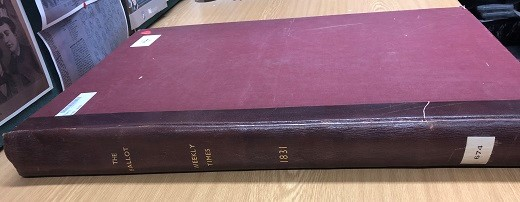
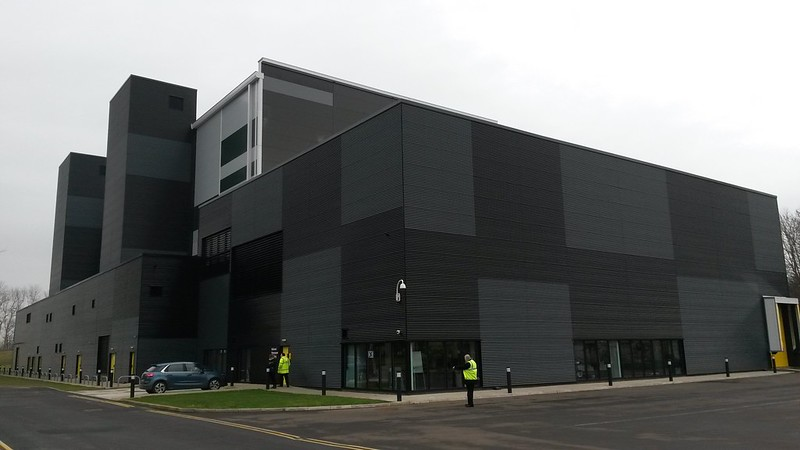
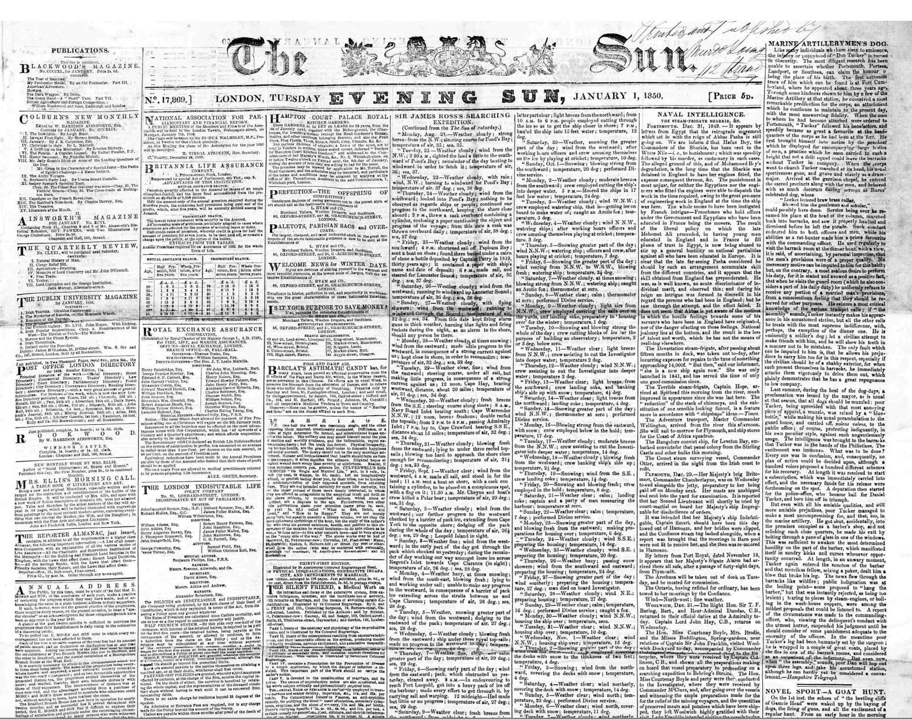

4 History of the British Library Collection
Newspaper data, meaning the text and images on which we can run computational methods such as those in this book, has a complex and multi-layered history. An excellent example of work peeling back these layers is Fyfe (2016). In this paper, the author explains in detail the process of digitisation, how it is based on previous projects (microfilm), and how this has impacted the makeup of the digitisation landscape today.
We can consider newspaper data as the result of a culmination of layers of objects and processes. At each stage, decisions are made around selection and preservation, which may have been made with long-term goals in mind, but may equally just be the result of contingency, practicality, or even random chance. The key layers might be thought of as follows:
Newspapers as physical objects
Newspapers as collection objects held by libraries and archives
Newspapers as microfilm or other pre-digital copies
Digitised images
Derived data (text and articles)
Interfaces
In this short chapter, I’ll go through each of these in turn. There isn’t space to give the whole history of newspaper archives, but hopefully this can give a sense of what has been done, and, more importantly, how this might affect your own research.
Newspapers as physical objects
The original source material of newspaper data, is, naturally, newspapers themselves: a term which became ubiquitous in the eighteenth century to describe large-format, regular and periodical items containing printed news. Prior to this other forms of mass-produced news included periodicals such as newsbooks (printed news, usually in a smaller format, a term used in the seventeeth century), newsletters (hand-written but still somewhat periodical newssheets) and news pamphlets (non-periodical texts, usually about a single news item.
The British Library’s periodical collection today comes from a few sources, covering different periods and acquired at different times. The earliest significant acquisition of periodicals is the Thomason Tracts, a collection of civil-war-era pamphlets and periodicals collected by the bookseller George Thomason (d. 1666), gifted to the Library in 1762 (Harris 1998, 19). The contents of this has been digitised and are available through Early English Books Online.
The next significant acquisition is the Burney Collection, purchased from the estate of Rev. Charles Burney (1757-1817) in 1818. This is a collection of about 700 bound volumes, within which are about one million pages of seventeenth and eighteenth century newspapers, across 1,290 titles (Prescott 2018). This is the largest single collection of pre-1800 newspapers, and formed the basis for the Library’s collection of early periodicals. In fact, when additional material pre-1800 was later acquired by the Library, it was inserted into the Burney Collection retroactively. The entire Burney collection has been digitised and is available through Gale Cengage.
As the volume of newspaper printing increased, there was a need to collect material straight from the firehose, so to speak. In 1822, the Library arranged for the Stamp Office, which kept a copy of all newly-printed newspapers for two years after publication, to send the copies to the Library once that period was up. This meant that from then on, the Library’s newspaper collection increased substantially.
This does not mean, however, that all material we would consider newspapers was collected from then onward. Many publications deliberately changed their format so that they would not be counted under the Stamp Act (and therefore taxed), and, as a result, were not collected and sent to the Library. Additionally, once legal deposit came into force, only one edition of each was sent: many papers had multiple editions (such as evening versions), not all of which have been preserved.
This practice continued until 1869, when a new mechanism, Legal Deposit, came into force. This meant that every newspaper publication was, by law, compelled to send a copy of each issue directly to the Library. From this date onwards, the newspaper collection of the British Library is pretty comprehensive, with an important caveat that only one edition per issue was generally sent (meaning evening editions, which might be substantially different, were not always kept).
Naturally, these newspapers were not collected in the form they were originally distributed to customers: unbound and folded sheets of paper. Instead, all of these collections (Thomason, Burney, Stamp Act Newpapers, Legal Deposit) come into the Library as bound volumes: hard-backed, folio sized volumes, each containing, usually, one year’s worth of issues for a single title (though not always, as this blog post explains). It is worth bearing this in mind because these volumes, and the way titles have been bound within them, have influenced the way that newspapers have been microfilmed and digitised.

The newspapers themselves continue to be collected by legal deposit, but the story of the collection doesn’t stop there. The huge volume of newspaper material collected meant that a new repository was built on the outskirts of London, near Hendon, in 1905. All newspapers after 1801 were intended to be kept there. However, it was soon realised that this was still not enough space and in 1932, on the same site, the ‘Colindale Newspaper Library’ opened.
Finally, Colindale itself was closed in 2013, and the entire newspaper collection (post-1801) was moved to a custom-built facility in Boston Spa, Yorkshire, where it is housed today, in a facility which is temperature-controlled and where newspaper volumes are retrieved by robots.

From Newspaper to Microfilm
Many of these volumes were subsequently put on microfilm. This began in 1948, and by 1951, about 75% of the newspapers published from between 1801 and 1820 had been microfilmed, though the process of microfilmed historic newspapers slowed down to concentrate on newly-acquired ones (Harris 1998, 602). Large-scale microfilm of the post-1801 collection resumed in the 1960s, and continued right up until the 1990s (Fyfe 2016, 559). Other collections of periodicals were microfilmed around the same time: first, what would become Early English Books Online , and between 1977 and 1979, the entire Burney collection was microfilmed because of worries about its condition (Prescott 2018).
It is these microfilms which form the basis for much of the Library’s digitised newspapers. This intermediate step of microfilm before digitisation has impacted how the latter has been done: Paul Fyfe notes, for example, that the way the microfilm scanner cradle held open the volumes of newspapers may have influenced the choice of the single page, rather than a two-page spread, as the basic unit of digitisation (Fyfe 2016, 557).
From Microfilm (and newspaper) to Digital Image
The next stage in this journey is the process by which digital copies of these newspapers were created. Again, this has a complex and multi-layered history. The first set of projects, JISC 1 and JISC 2, began in the early 2000s. The digitisation involved scanning newspapers from rolls of microfilm - in many cases new microfilm was created before the process of scanning, according to Fyfe (2016). The result of this were high-quality TIFF or JPEG2 images, suitable for preservation and storage.
From Digital Image to Text Data
The next step in digitisation is processing the images so that the pixels which make up the text within them can be turned into a machine-readable form. In newspapers, this is made more difficult by the fact that newspapers have complex structures - the text does not run from left to right in most cases, but is separated into columns and individual articles. Therefore, a process of segmentation must be carried out before anything else. Both of these steps are still very error-prone.
OCR/OLR
The next layer is the results of the OLR (Optical Layout Recognition, which segments newspapers into articles and columns) and OCR (Optical Character Recognition, which turns the pixels which make up the text into a machine-readable form). Roughly speaking, a newspaper is scanned or photographed, and the resulting digital image is run through OLR and OCR software, such as ABBYY Finereader, or the open-source Tesseract. This generally produces a new set of files which contain the layout and text. These files are usually in XML format, and contain not only the text but hierarchical tags describing the various sections, headers, and even the coordinates of the words on the page.

Both of these processes are notoriously error-prone and inconsistent. Much of this is due to the fact that the conditions and layout of newspapers is not consistent. Many have different fonts, complicated headers, and in many cases, the digitised images on which the OCR is based contain faults, from the microfilm or scanning, or from problems with the original physical item. However, even with lower-quality OCR, many types of text analysis can still produce meaningful results (see the recommended reading).
METS/ALTO
The industry-standard for these files is a format known as METS/ALTO. This has been used for all the major digitisation projects after JISC, which used a different XML standard. These are the files you are likely to find yourself with at the beginning stage of working with newspaper data.
METS/ALTO consists of two parts: first a set of ALTO files, one for each page of an issue of a newspaper. These ALTO pages contain each word derived from the OCR, along with coordinates which tell where it appears on the page, divided into ‘text blocks’ and ‘text lines’, as well as some basic metadata, which might change depending on the specifics of the software used. Each issue also has a single METS file, which contains information on how the lines and blocks in the ALTO files should be knitted together to recreate the newspaper.
Chapter 5 will go into a little more detail, and provide some information on where you can find resources to work with these METS/ALTO files. A tutorial in the second part will show how you can extract the text and save it separately, using R.
Conclusion
As this is meant as a practical guide,it is worth reflecting on how this may effect your own experience of working with newspaper data. First of all, the complex history of the collection means that depending on the time period and the type of material, it may be available from very different sources, or in very different formats. It is possible that material of interest is spread across multiple collections, and that some of it has been digitised and others not, often for arbitrary reasons. A second takeaway is that these collection, microfilm, and digitisation practices have a huge effect on the resulting newspaper data available today, and are worth understanding before undertaking any research project which hopes to use newspaper data in any kind of representative way.
Recommended Reading
Torget, Andrew J. “Mapping Texts: Examining the Effects of OCR Noise on Historical Newspaper Collections.” In Digitised Newspapers – A New Eldorado for Historians?, edited by Estelle Bunout, Maud Ehrmann, and Frédéric Clavert, 47–66. De Gruyter, 2022. https://doi.org/10.1515/9783110729214-003.
Van Strien, Daniel, Kaspar Beelen, Mariona Ardanuy, Kasra Hosseini, Barbara McGillivray, and Giovanni Colavizza. “Assessing the Impact of OCR Quality on Downstream NLP Tasks:” In Proceedings of the 12th International Conference on Agents and Artificial Intelligence, 484–96. Valletta, Malta: SCITEPRESS - Science and Technology Publications, 2020. https://doi.org/10.5220/0009169004840496.
Why You (A Humanist) Should Care About Optical Character Recognition